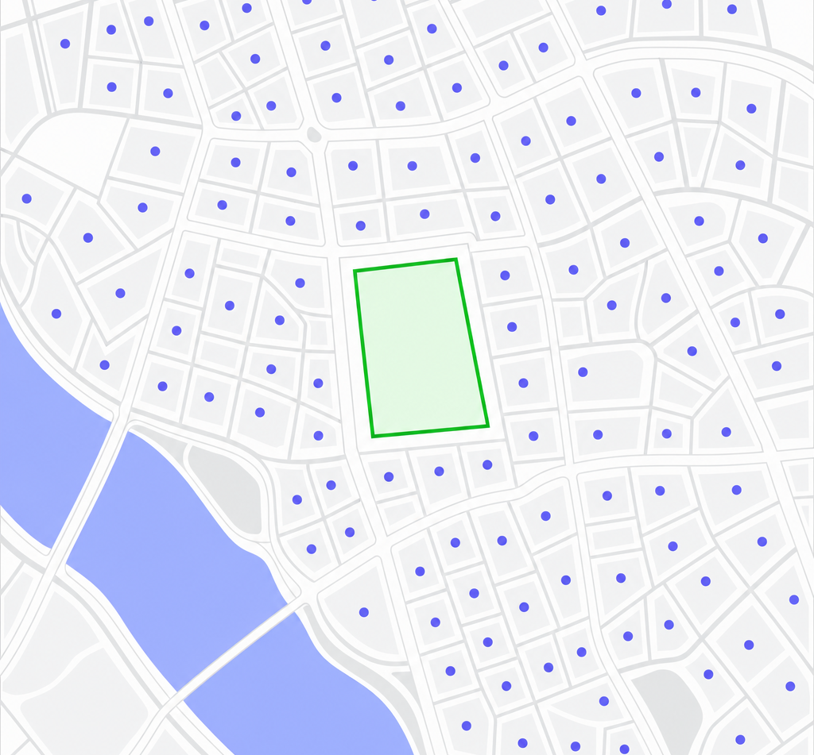
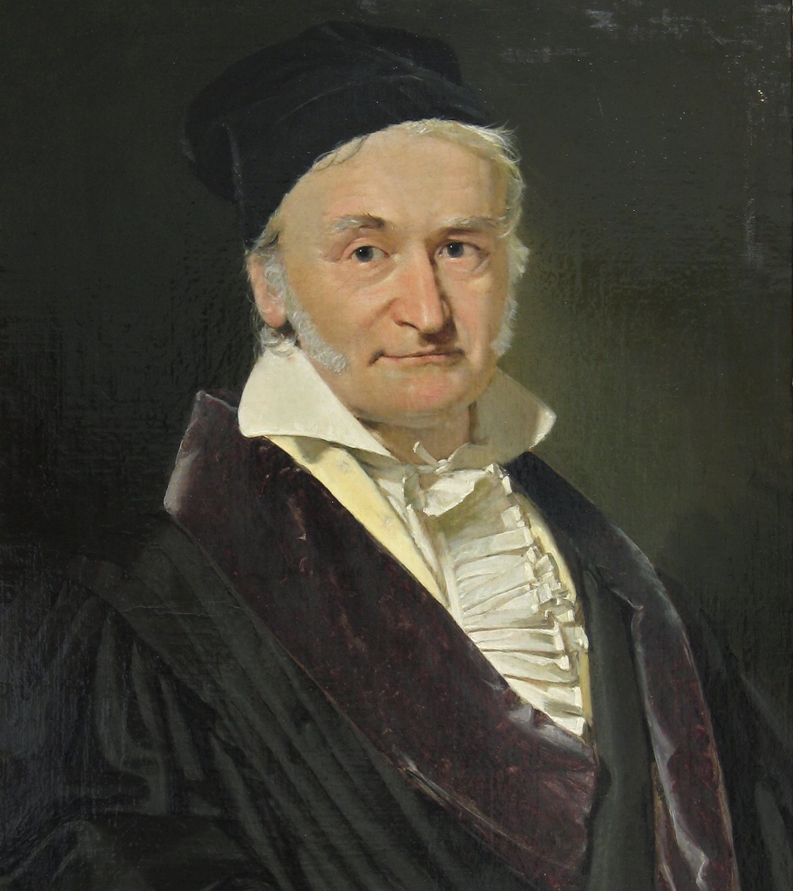
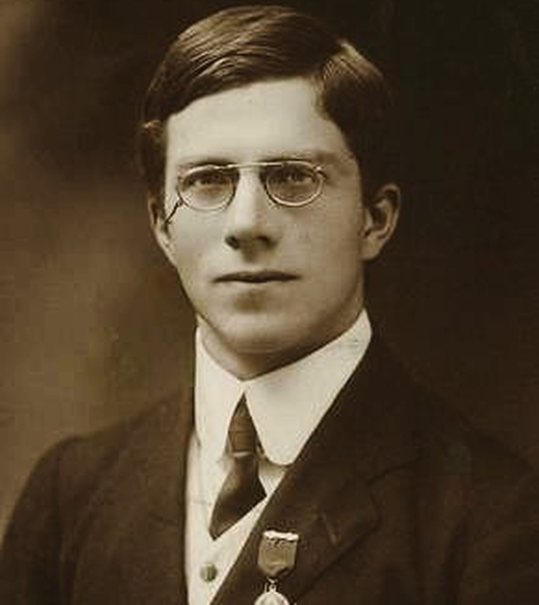
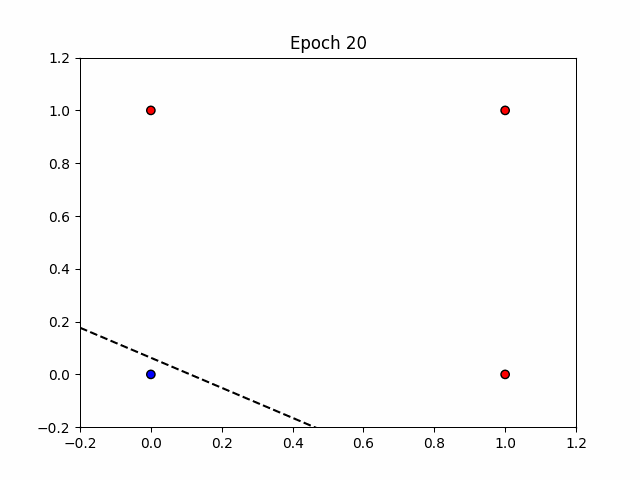
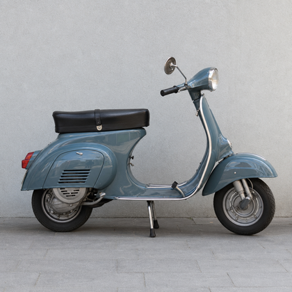

스마트시티 AI · 데이터 분석 역량 강화를 위한 실습 세미나
AI를 활용한 도시 빅데이터 분석
데이터 분석 이론부터 딥러닝, LLM 까지 — 도시 문제를 이해하고 해결하는 데이터 분석 방법론
빅밸류 구름 대표 · 중앙대학교 도시공학과 Urban D&A 연구실 · 310관 417호
CURRICULUM
4주 과정
데이터 분석과 기계학습
회귀분석 · 통계기계학습인공신경망
세부 내용은 수강생 수준을 고려해 조정될 수 있습니다 · 9월 26일(추석연휴), 10월 3일(개천절) 휴강
1주차 · 데이터 분석 기초
이 아파트, 얼마에 분양해야 할까?
평균에서 다중회귀까지 — 숫자 하나를 정하는 데 필요한 것들
PART 0 · 문제 제기
강남구에 새 아파트를 짓는다
- 여러분은 시행사의 사업기획 담당자다.
- 이 부지에 아파트를 짓는다. 분양가를 정해야 한다.
- 너무 높으면 미분양, 너무 낮으면 손실. 정답에 가까운 숫자가 필요하다.

강남구 지도 — 기존 단지 점 + 빈 부지 강조
관측 데이터
강남구 최근 1년 실거래 · 평당가(만원) · 24개 단지
PART 1
관측값이 1차원일 때
사용 가능한 모델은?
멈춤 02
이 점들을 하나의 숫자로 요약한다면?
딱 하나의 숫자를 제시해야 한다면 무슨 값을 쓰겠는가. 그리고 왜 그 값인가?
진행 포인트 — 반드시 "왜"를 물을 것. 대부분 평균이라 답하지만 근거를 대지 못한다. 그 공백이 이 강의의 출발점.
평균
ŷ = ȳ = 1/n Σ yi
모든 관측치에 같은 하나의 값을 예측하는 수평선.
정의
평균은 우리가 가격 정보 외에 아무것도 모를 때 쓸 수 있는 가장 좋은 데이터 분석 모델이다.
오늘의 복선
모든 모델은 이 모델보다 나은지로 평가받는다
멈춤 03
왜 하필 평균인가?
중앙값도 최빈값도 있는데, 왜 평균을 '가장 좋은' 모델이라고 하나. '좋다'는 걸 어떻게 판정할 건가?
진행 포인트 — 답이 나오지 않는다. 판정 기준이 없기 때문이다. "이 질문에 처음 답한 사람이 있다"로 넘어간다.
후보는 셋이다
무엇이 더 좋은지 말하려면, 먼저 '좋다'를 재는 자가 필요하다.

가우스 초상 (퍼블릭 도메인)
1777–1855
카를 프리드리히 가우스
정수론 · 천문학 · 측지학 · 통계
관측 오차를 다루는 문제에서 최소제곱을 정립했다.
1801 · 이야기
사라진 천체를 다시 찾다
- 1801년 1월, 이탈리아의 피아치가 새로운 천체 세레스(Ceres)를 발견한다.
- 40여 일간 관측되다가 태양 뒤로 들어가면서 사라진다.
- 다시 나타날 위치를 계산해야 하는데, 확보된 관측값은 몇 개뿐이고 하나하나가 미세하게 다르다.
- 24세의 가우스가 계산한 위치에서 세레스는 실제로 재발견된다.
관측값이 매번 다를 때, 무엇을 참값의 대표로 삼을 것인가?
메모 — 최소제곱을 학술지에 먼저 발표한 사람은 르장드르(1805). 정규분포·오차이론과 연결해 "왜 최선인가"를 논증한 것은 가우스(1809).

밤하늘 관측 이미지 / 어긋난 관측점
첫 번째 시도
오차를 재보자
ei = yi − ŷ
각 점에서 후보 모델값까지의 세로 거리. 위쪽은 (+), 아래쪽은 (−).
문제 — 더하면 0이 된다
- +와 −가 상쇄된다.
- 오차가 아무리 커도 합은 0에 가까울 수 있다.
- 평가 기준이 될 수 없다.
그럼 어떻게 하면 될까?
가우스의 선택 — 제곱
SSE = Σ (yi − ŷ)²
- 1부호가 사라진다
- 2큰 오차에 더 큰 벌점 — 크게 틀리는 것을 더 심각하게 본다
- 3미분 가능 → 최솟값을 해석적으로 구할 수 있다
절댓값은 꺾인 점에서 미분이 불가능하다. 3번이 결정적이다.
최소제곱이 지목한 답
슬라이더를 움직여 보세요
평균은 관습이 아니라, 제곱오차 기준에서 유일하게 최적인 해다.
TSS — 총제곱합
TSS = Σ (yi − ȳ)²
4,820
평균 모델의 전체 오류량
Total Sum of Squares · 편차제곱합, SST로도 표기. n−1로 나누면 분산.
정보가 하나도 없을 때 감수해야 하는 오류의 총량. 우리의 바닥(baseline)이다.
멈춤 04
TSS를 줄이려면 무엇이 필요한가?
모델을 더 복잡하게 만들면 되는가? 아니면 다른 게 필요한가?
진행 포인트 — 학생들이 스스로 변수를 제안하게 한다. 이 리스트를 칠판에 남겨두고 S31에서 다시 꺼낸다.

골턴 사진 / 부모키×자식키 도수분포표
1822–1911
프랜시스 골턴
다윈의 사촌
유전 형질이 세대 간에 어떻게 전달되는지를 숫자로 보려 했다.
1886 · 발견
평범함으로의 회귀
- 1870년대 스위트피 완두콩 씨앗 크기 실험에서 시작해 사람 키 데이터로 확장했다.
- 부모가 아주 크면 자식은 부모보다 작은 쪽으로, 아주 작으면 큰 쪽으로 간다.
- 자식의 키가 집단 평균 쪽으로 당겨진다.
여기서 '회귀(regression)'라는 이름이 나왔다. 오늘날의 "y를 x로 예측하는 기법"이라는 뜻은 나중에 붙은 것이다.
메모 — 유전의 법칙이 아니다. 두 변수의 상관이 완전하지 않으면(|r| < 1) 수학적으로 반드시 나타나는 통계적 현상이다.

칼 피어슨 사진 (퍼블릭 도메인)
1857–1936
칼 피어슨 — 관계를 숫자로
- 골턴의 관찰을 상관계수 r로 공식화 (1896)
- 회귀직선의 계수를 데이터에서 계산하는 절차를 정립
r = Σ (xi−x̄)(yi−ȳ) / √Σ(xi−x̄)² √Σ(yi−ȳ)²
왜 y = ax + b 인가?
- 평균 모델은 x가 무엇이든 같은 값을 낸다 → 기울기 0
- x의 정보를 쓰려면, x가 변할 때 예측값도 변해야 한다
- 가장 단순한 변화 방식 = 일정 비율로 변한다
- a는 "x가 1 늘 때 y가 얼마나 변하는가"
직선은 가정이 아니라 가장 적은 가정이다.
멈춤 05
평균 모델과 회귀 모델은 완전히 다른 모델인가?
회귀 모델에서 기울기가 0이면 무엇이 되는가?
유도할 답 — 평균 모델은 회귀 모델의 특수한 경우(a=0). 이 관계는 한 학기 내내 반복된다: 복잡한 모델은 단순한 모델을 포함한다.
같은 원리, 다른 대상
가우스가 상수에 대해 했던 일을 직선에 대해 똑같이 한다.
mina,b Σ (yi − (axi + b))²
달라진 것은 후보 모델의 집합뿐이다. 판정 기준은 그대로 제곱오차.
정보가 사람을 드러낸다

왼쪽: 키만 다른 검은 실루엣 5명 / 오른쪽: 같은 5명이 컬러로, 나이가 드러난다
우리가 아는 것: 키뿐
평균 168cm — 누구에게나 같은 하나의 예측
우리가 아는 것: 키 + 나이
나이를 알면 사람마다 다른 예측이 가능하다
모델이 좋아진 것이 아니다. 정보가 늘어난 것이다.
RSS — 잔차제곱합
RSS = Σ (yi − ŷi)²
TSS평균 모델의 오류 — 정보 없음
RSS회귀 모델의 오류 — 정보 있음
ESSTSS − RSS · 정보가 없애준 오류
멈춤 06
이 모델은 얼마나 좋아진 건가?
4,820에서 1,930으로 줄었다. 차이(2,890)를 쓸까, 비율을 쓸까. 왜?
유도할 답 — 차이는 단위와 데이터 규모에 종속된다. 비율이어야 다른 문제끼리 비교가 된다.

로널드 피셔 사진 (퍼블릭 도메인)
1890–1962
로널드 피셔 — 오류를 쪼개다
- 분산분석(ANOVA)을 정립 — 전체 변동을 "설명된 부분"과 "남은 부분"으로 분해
- 실험계획법, 유의성 검정, p값의 실용화
TSS = ESS + RSS
메모 — 피셔가 세운 것은 분산분해와 검정의 틀이다. "결정계수"라는 용어는 시월 라이트(1921)가 붙였다.
R² — 결정계수
R² = 1 − RSS/TSS
1 − 1,930 / 4,820 = 0.60
- 정보 없이 만든 모델의 오류 중, 이 모델이 없애준 비중
- R² = 0 → 평균 모델과 똑같다. 정보가 아무 도움이 안 됐다
- R² = 1 → 오류가 0. 완벽히 설명
- 모든 모델은 "정보 없는 모델(평균)"과 비교당한다. R²는 그 비교의 점수판이다.
멈춤 07
R²가 음수가 될 수 있을까?
음수가 나오려면 어떤 상황이어야 하나. 그런 일이 실제로 있을까?
정답 — RSS > TSS, 즉 모델이 평균보다 못 맞출 때. 학습 데이터에 절편 있는 OLS는 음수 불가. 학습에 쓰지 않은 데이터에서는 얼마든지 발생한다.
아파트 문제로 복귀
x축을 전용면적으로 바꾸고 회귀선을 그었다.
R²
0.60
면적 하나를 알았을 뿐인데 분양가 예측이 이만큼 나아졌다.
PART 3
정보를 더 주면 — 다중회귀와 그 함정
하나로 60%를 설명했다면, 열 개를 넣으면?
전용면적
층수
준공연도
역거리
세대수
학군
공급면적
방 개수
ŷ = b + a1x1 + a2x2 + ⋯ + akxk
변수를 늘리면 R²는?
- 변수를 추가하면 RSS는 절대 늘어나지 않는다
- → R²는 절대 줄어들지 않는다
- 심지어 난수 변수를 넣어도 R²는 조금씩 올라간다
통계학자들은 처음에 이걸 보고 만족했다.
멈춤 08
그럼 변수를 계속 넣으면 되는가?
무언가 이상하다면, 무엇이 이상한가?
학생들이 잘 내는 답 — 과적합, 해석 불가, 무의미한 변수.
변수 수에 벌점을 준다 — 수정 R²
R²adj = 1 − [RSS / (n−k−1)] / [TSS / (n−1)]
수정 R²는 쓸모없는 변수를 넣으면 실제로 내려간다.
k는 변수 개수. 변수를 늘려 얻은 설명력이 자유도 손실보다 작으면 지표가 하락한다.
| 모델 |
면적 계수 |
층수 계수 |
역거리 계수 |
| 면적만 |
+1,240 |
— |
— |
| + 층수 |
+1,180 |
+85 |
— |
| + 역거리 |
+1,205 |
+71 |
−340 |
| + 세대수 |
−210 |
+66 |
−290 |
면적이 늘수록 가격이 떨어진다? 변수를 하나 넣고 뺄 때마다 기울기가 흔들린다.
이 계수를 믿어도 되는가
우리가 가진 데이터는 표본이다. 다른 표본을 뽑으면 계수는 다르게 나온다.
귀무가설 H₀
βⱼ = 0 — 이 변수는 y와 아무 선형관계가 없다
대립가설 H₁
βⱼ ≠ 0
t = β̂ⱼ / SE(β̂ⱼ)
추정치가 0에서 표준오차 몇 개만큼 떨어져 있는가.
멈춤 09
p값은 무엇의 확률인가?
p < 0.05를 보고 우리는 정확히 무슨 말을 할 수 있는가?
귀무가설이 참일 때, 관측된 것만큼 극단적인 결과가 나올 확률
p값은 "가설이 참일 확률"이 아니다. 가설이 참이라고 가정했을 때 데이터가 관측될 확률이다.
P(데이터 | H₀) ≠ P(H₀ | 데이터)
그래서 "계수가 0일 확률이 5%", "0이 아닐 확률이 95%"는 모두 틀린 진술이다. 조건이 뒤집혀 있다. 통계학에서 가장 널리 퍼진 오해이자 논문 심사에서 지적당하는 단골 항목이다.
실무 규칙
p < 0.05 → 귀무가설을 기각한다 → 계수가 0이라고 보기 어렵다 → 변수를 채택
0.05는 관습적 기준이지 자연법칙이 아니다.
변수 선택 — p값으로 가지치기
| 변수 |
계수 |
p값 |
판정 |
| 전용면적 |
+1,190 |
0.000 |
채택 |
| 층수 |
+68 |
0.003 |
채택 |
| 세대수 |
−12 |
0.412 |
제거 |
| 준공연도 |
+4 |
0.688 |
제거 |
유의하지 않은 변수를 제거하고 다시 적합한다.
1차 · 전체 변수
| 전용면적 | +820 | 0.312 |
| 공급면적 | +410 | 0.287 |
| 층수 | +66 | 0.004 |
2차 · 공급면적 제거 후
| 전용면적 | +1,190 | 0.000 |
| 층수 | +68 | 0.003 |
중요한 변수가 p값 때문에 잘려나갔다. 무슨 일이 벌어진 건가?
다중공선성
- 같은 방향의 정보를 담은 변수가 둘 이상 들어가면 공통 변동성을 나눠 갖는다
- 그 공통 부분이 "누구의 몫인가"를 데이터가 결정하지 못한다
- 표준오차 ↑ → t값 ↓ → p값 ↑
- 계수는 여전히 불편추정량이지만 불안정해진다
VIFⱼ = 1 / (1 − R²ⱼ)
보통 5 또는 10 초과 시 경고. 아파트에서는 전용면적 / 공급면적 / 방 개수가 전형적 사례.
두 변수가 관측치마다 거의 같이 움직인다 — r = 0.95
대응 — Stepwise와 그 한계
전진선택 Forward
아무것도 없이 시작해 가장 도움 되는 변수를 하나씩 추가
후진제거 Backward
전부 넣고 가장 쓸모없는 것을 하나씩 제거
단계적선택 Stepwise
추가하면서 동시에 제거도 검토
다중공선성 대응
변수 제거 · 변수 결합(면적당 가격) · 차원 축소(PCA) · 정규화 회귀(Ridge/Lasso)
그러나 stepwise는 만능이 아니다
p값 왜곡 · 투입 순서 의존 · 자동화가 도메인 지식을 대체하지 못한다
변수들이 같은 정보를 공유한다면, 아예 서로 겹치지 않는 새 축을 만들면 어떨까? — PCA의 출발점
PART 3 정리
그래서 우리가 얻은 것
ŷ = b + a₁x₁ + a₂x₂ + a₃x₃
독립변수 3개, 가중치 4개짜리 선형 방정식 하나
이 네 숫자가 모델의 전부다. 새 부지의 면적·층수·역거리를 넣으면 분양가가 나온다.
— 그렇다면 이 형태로는 무엇을 풀 수 없을까?
SPSS · SAS · statsmodels
돌리면 이 화면이 나온다
R 제곱
0.600
TSS 4,820 → RSS 1,930
수정 R 제곱
0.594
변수 3개에 대한 벌점 반영
| 변수 |
B | 표준오차 | β |
t | 유의확률 | VIF |
| (상수) | 2,140 | 210 | — | 10.19 | .000 | — |
| 전용면적 | 1,190 | 96 | .612 | 12.40 | .000 | 1.8 |
| 층수 | 68 | 22 | .154 | 3.09 | .002 | 1.2 |
| 역거리 | −340 | 88 | −.208 | −3.86 | .000 | 1.5 |
이 수업의 예시 데이터 기준 · 소프트웨어마다 표 이름만 다르고 항목은 같다
- R²정보 없는 모델(평균)의 오류 중 이 모델이 없애준 비중
- Bx가 1 늘 때 y가 얼마나 변하는가 — 단위가 그대로 붙는다
- β단위를 없앤 값. 변수끼리 영향력을 견줄 때 쓴다
- t추정치가 0에서 표준오차 몇 개만큼 떨어져 있는가 = B / 표준오차
- p귀무가설이 참일 때 이만큼 극단적인 결과가 나올 확률
- VIF다중공선성 경고등. 보통 5 또는 10을 넘으면 의심
멈춤 10
이 모든 문제의 뿌리는 무엇인가?
계수 부호가 뒤집힌다
p값이 흔들린다
변수 선택에 정답이 없다
다중공선성
각각 별개의 문제인가, 아니면 하나의 뿌리에서 나온 것인가?
직선은 관계의 형태를 미리 정해놓은 모델이다.
표본과 모집단 — 앞쪽 소수의 관측치만 선명하고, 뒤로 광대한 모집단이 안개 속으로 사라진다
- 우리가 본 표본은 전체가 아니다. 배후에 모집단이 있다
- 모집단은 정규분포 같은 균질한 분포를 따른다고 가정한다
- 오차는 독립이고 등분산이며 정규분포를 따른다고 가정한다
얻는 것
적은 데이터로 빠른 계산 · 계수의 해석 가능성 · 불확실성의 정량화
일반성 vs 개별성
|
통계적 회귀 |
우리가 필요한 것 |
| 대상 |
모집단의 평균적 경향 |
이 부지, 이 아파트 |
| 관계 |
선형 · 전역적 |
비선형 · 국소적 |
| 데이터 |
정제된 소표본 |
대용량 · 비정형 · 이질적 |
| 목표 |
설명과 검정 |
예측과 의사결정 |
회귀분석은 다수의 논리를 밝히는 데 강하다.
TRANSITION
statistics > heuristics
기계학습의 세계로
가정을 세우고 검정하는 방식에서, 데이터로부터 규칙을 찾아내는 방식으로
URE9104 · 도시빅데이터와 머신러닝
기계학습의 역사
기대와 겨울, 그리고 돌파 — 세 번의 반복
지난 회차에서 이어서
통계학이 더 높은 설명력을 얻기 위해
다양한 비선형 방법을 고민하지만
한계가 존재
1936 — 1958
첫 번째 기대
계산이라는 개념이 먼저 만들어지고, 그 위에 학습이라는 개념이 얹힌다
인물
앨런 튜링
Alan Mathison Turing (1912–1954)
컴퓨터 과학의 아버지
1950
튜링 테스트
기계가 생각할 수 있는가? 를 실험적으로 검증
인물
프랑크 로젠블랫
Frank Rosenblatt (1928–1971)
기계가 스스로 학습할 수 있다 — 이 개념을 세상에 처음 제시한 사람
And·Or·Nand 연산을 데이터를 학습해서 구현할 수 있을까?
세 연산 모두 직선 하나로 0과 1을 가를 수 있다 — 선형 분리 가능
ROSENBLATT 1958 · 학습 규칙
직접 학습시켜 보자
틀린 가중치에서 시작해 한 샘플씩 고쳐 나간다 · OR 을 맞추면 목표를 AND 로 바꾼다
된다
와 이게 되네!
선형으로 나뉘는 문제는 퍼셉트론이 푼다

OR · 결정경계가 데이터를 가른다
1958 · 언론과 군의 열광
인공지능 주식 상한가!!
로젠블랫의 발표 직후, 언론들은 이렇게 보도!
The New York Times · 1958
「퍼셉트론은 인간의 눈처럼 보고 판단하는 기계가 될 것이다.」
Popular Science
「10년 안에 이 기계는 학습하고, 기억하고, 결정을 내릴 수 있을 것이다!」
미국 해군, 공군, DARPA(당시 ARPA) 등에서 연구비를 전폭적으로 지원
안 된다
망했어요!
XOR을 못 맞춰요
직선 하나로는 절대 가를 수 없다

XOR · 경계가 자리를 찾지 못한다
인공지능 제1의 겨울 · 1969–1980
XOR도 못 푼다
민스키와 파퍼트, 『Perceptrons』(1969)
퍼셉트론 기반 AI의 과학적 한계 주장
DARPA 등 주요 연구기관, AI 투자 중단
1980 — 1987
두 번째 기대
학습을 포기하고, 지식을 사람이 직접 적어 넣는다
전문가 시스템의 봄
1980년대 전문가 시스템의 등장
4억
달러
10년간 투입 — 미국·유럽의 「AI 전쟁」식 과잉 대응
일본 정부는 논리 프로그래밍 기반 지능형 컴퓨터 개발을 선언
MYCIN의 규칙 예 — 지식을 규칙으로 적는다
인공지능 제2의 겨울
또 망했어요~ 규칙이 수천 개를 넘자 무너졌다
01
규칙 수가 수천 개를 넘어서자 유지보수 불가
02
상황 변화에 적응 불가
03
지식 엔지니어링 비용 폭등
04
기대 대비 성능 미달
05
Lisp 머신·AI 전용 워크스테이션이 IBM PC와 유닉스에 밀려 몰락
Symbolics, Thinking Machines 등 AI 하드웨어 기업이 연이어 도산
신경망 없이도 가능했다 ①
의사결정나무 · Decision Tree
1980
CHAID
Kass, G. V. (1980). An exploratory technique for investigating large quantities of categorical data. Applied Statistics 29(2): 119–127.
1984
CART
Breiman, L.; Friedman, J. H.; Olshen, R. A.; Stone, C. J. (1984). Classification and regression trees. Wadsworth & Brooks/Cole.
1986
ID3
Quinlan, J. R. (1986). Induction of Decision Trees. Mach. Learn. 1(1): 81–106.
1993
C4.5
Quinlan, J. R. (1993). C4.5: Programs for Machine Learning. Morgan Kaufmann.
J. R. Quinlan
ID3와 C4.5로 계보를 이어붙인 사람
신경망 없이도 가능했다 ②
Support Vector Machine 1995
블라디미르 배프닉
Vladimir Vapnik
두 부류 사이의 여백(마진)을 가장 넓게 두는 경계를 찾는다
Cortes, C. and Vapnik, V. (1995) Support-Vector Networks. Machine Learning 20, 273–297.
앙상블 모델의 부상
그런데 다 도토리 키재기였다
모든 데이터에서 최강인 단일 알고리즘은 없었다 — 그래서 뭉쳐서 한 팀으로 싸운다
자로 키를 재는 고만고만한 도토리 다섯 → 뭉쳐서 한 팀이 된 도토리들
실증 비교의 결론
Caruana(2006) · Fernández-Delgado(2014, 179개 알고리즘 · 121개 데이터셋) — 단일 최강은 없다(No Free Lunch). 평균적으로 가장 강한 건 앙상블.
94.1%
랜덤포레스트가 낸 최고 정확도 대비 성능
최상위 5개 중 3개가 RF
그래서 앙상블 — Random Forest · XGBoost가 정형 데이터의 왕좌에 오른다.
Part 2
다시 신경망으로
인공 신경망과 딥러닝 — 20년 전에 버려둔 길로 되돌아간다
인물
역전파 알고리즘 1986
데이비드 러멜하트
제프리 힌튼
로날드 윌리엄스
퍼셉트론(1957)에서 역전파(1986)까지 — 오차를 뒤로 흘려보내 가중치를 고치는 방법이 자리를 잡는다
Rumelhart, D. E., Hinton, G. E., Williams, R. J. (1986). Learning representations by back-propagating errors. Nature 323, 533–536.
레고처럼 조립해 다양한 문제를 푼다
입력 2개 · 은닉 2개 · 출력 1개 — 가중치와 편향만 바꿔 끼우면 된다
한 층 안에서 벌어지는 일
곱하고 더한 뒤, 구부린다
z = Wx + b
Affine — 가중치를 곱하고 편향을 더한다. 앞 장의 W와 b가 하는 일이 이것이다
a = σ(z)
활성화 — 그 결과를 곡선으로 구부려 다음 층에 넘긴다
Affine만 쌓으면 어떻게 될까? 직선에 직선을 이어 붙여도 결국 직선 하나다.
사이에 비선형 함수가 있어야 층을 쌓는 의미가 생긴다.
신경망은 오차를 최소화하며 학습한다
바닥면은 가중치 공간 (w₁, w₂) · 높이는 그 가중치가 만드는 제곱오차 E · 출발점에 따라 도착지가 갈린다

전역 최소 · Global optimum
오차가 가장 작은 가중치 조합
지역 최소 · Local optimum
기울기가 0이라 더 못 내려간다
w₁
w₂
A에서 출발 → 전역 최소에 도달
B에서 출발 → 지역 최소에 갇힌다
바닥에 투영한 가중치 궤적
kloud80.github.io/bvlecture/01NN.html
경사하강법이 실제로 보는 것
지도를 보고 내려가는 게 아니다
- 앞 장의 곡면은 우리가 그린 그림이다. 알고리즘은 그 지도를 갖고 있지 않다
- 알 수 있는 건 지금 서 있는 자리의 기울기 하나뿐
- 그 방향으로 조금 옮기고, 거기서 다시 잰다 — 이것만 반복한다
- 그래서 출발점이 도착지를 바꾼다
1957 → 1986
방법을 아는데 계산을 못 했다
- 가중치 하나를 고치려면 그 가중치가 최종 오차에 얼마나 기여했는지를 알아야 한다
- 그런데 층이 쌓이면 그 영향은 뒤쪽 층의 모든 가중치를 거쳐서 전달된다
- Affine → 활성화 → Affine → 활성화 … 층마다 항이 늘어난다
- 직접 미분해서는 식이 감당이 안 됐다
앞 장의 아주 작은 망에서도
ŷ = σ( W₂·σ( W₁x + B₁ ) + B₂ )
W₁ 하나를 건드리면 σ 를 두 번 지나 ŷ 까지 영향이 간다.
층이 열 개면 σ 를 열 번 지난다.
BACK-PROPAGATION · NATURE 1986
연쇄법칙이 길을 냈다
연쇄법칙(chain rule)을 이용해 오류를 출력층부터 순차적으로 전파하는 방법을 제시
합성함수 f(g(x)) 의 미분
∂f/∂x = ∂f/∂g × ∂g/∂x
바깥쪽 미분 × 안쪽 미분 — 그냥 곱하면 된다
신경망에 그대로 적용하면
∂Loss/∂W2[0,0]
= ∂Loss/∂Yhat × ∂Yhat/∂Z2 × ∂Z2/∂W2[0,0]
한 번에 못 구하는 편미분을 세 조각으로 쪼개서 각각 구한 뒤 곱한다
Rumelhart, D. E., Hinton, G. E., Williams, R. J. (1986)
Learning representations by back-propagating errors.
Nature 323, 533–536
공저자
제프리 힌튼
2018 튜링상 · 2024 노벨 물리학상
지금 딥러닝의 거의 전부가 이 논문 위에 서 있다
한 단계씩 계산해 보자
입력 2 · 은닉 2 · 출력 1 · XOR 4행 배치
1986 → 2012
구조는 늘고, 가중치는 자릿수로 불어났다
- 역전파가 자리를 잡자 구조가 갈라져 나온다 — 순서를 기억하는 RNN,
기억을 길게 끄는 LSTM, 이미지를 보는 CNN
- 가중치는 수백 개에서 수천만 개로, 자릿수를 갈아치운다
-
그런데 깊게 쌓을수록 학습이 오히려 안 됐다
그러나 깊어지면 학습이 안 됐다
심층신경망의 한계
01
학습 시간
네트워크가 깊어짐에 따라 학습 시간이 너무 느리다
02
Vanishing
Sigmoid 함수가 극단치에서 변동성이 극히 작아 학습에서 Vanishing 현상 발생
03
Local Optimal
초기 가중치로 인해 Local Optimal에 빠지거나 발산하는 문제
층을 더 쌓을수록 오차 신호가 앞쪽까지 닿지 않는다
ImageNet Top-5 Error
AlexNet(2012) — 판이 뒤집힌 순간
모델이 맞혀야 하는 것 — 라벨 1,000종 · 학습 이미지 120만 장 (개 품종만 120종이다)
표범
leopard
컨테이너선
container ship

스쿠터
motor scooter
버섯
mushroom
골든리트리버
golden retriever
15.3
%
직전 최고 기록 26.2%를 10%p 넘게 끌어내린다
Krizhevsky, A., Sutskever, I., Hinton, G. E. (2012). ImageNet Classification with Deep Convolutional Neural Networks. NIPS.
병렬 연산
왜 GPU였나
3D 폴리곤 연산 ≈ 신경망 편미분 계산
둘 다 작고 단순한 float 연산을 아주 많이 반복한다
폴리곤 단위 FLOAT 연산 > Core 개수
GPU는 코어 수를 늘리는 방향으로 발전했다
연산 정밀도
CPU(float32) · GPU(float16) · TPU(bfloat16)
WHY 2012 WORKED
GPU는 절반이었다
속도가 빨라져도 신호가 앞쪽까지 닿지 않으면 깊은 망은 학습되지 않는다
한계 ② VANISHING 을 풀다
ReLU — 기울기를 살려서 깊게 쌓는다
- 역전파는 층을 거슬러 오르며 기울기를 계속 곱한다
- Sigmoid는 양끝에서 기울기가 0에 가깝다 → 곱할수록 0으로 사라진다
- ReLU는 양수 구간에서 기울기가 정확히 1 → 아무리 곱해도 줄지 않는다
- 깊이를 늘려도 학습이 되기 시작했다
외워버리는 문제를 풀다
Dropout — 매번 다른 망을 학습한다
- AlexNet은 파라미터가 약 6,000만 개, 학습 이미지는 120만 장
- 그대로 두면 답을 외워버린다 — 학습 성능만 오르고 평가 성능은 멈춘다
- 매 스텝마다 뉴런 절반을 임의로 끈다
- 서로 다른 망 여러 개를 학습해 평균 내는 효과
한계 ③ LOCAL OPTIMAL 을 풀다
Optimizer — 산을 내려오는 길을 고른다
바닥이 울퉁불퉁하면 어떻게 내려가느냐가 어디에 도착하는지를 바꾼다
GD → SGD전부 보면 느리다 → 조금만 보고 빨리 판단한다
Momentum내려오던 방향의 관성을 얹어 얕은 골짜기를 넘는다
Adagrad
RMSProp많이 움직인 좌표는 보폭을 줄인다
Adam방향은 Momentum, 보폭은 RMSProp — 지금의 기본값
정리
AlexNet은 새 알고리즘이 아니었다
01 학습 시간
GPU · 병렬 연산
같은 연산을 수천 코어가 동시에
02 Vanishing
ReLU
양수 구간 기울기 1 — 곱해도 사라지지 않는다
03 Local Optimal
Momentum · Adam
관성과 적응적 보폭으로 얕은 골짜기를 넘는다
여기에 Dropout(과적합)과 ImageNet 120만 장(데이터)이 더해졌다.
따로 풀리던 것들이 2012년에 한꺼번에 맞물렸다 — 그것이 AlexNet이다.
2012 → 지금
규모는 커졌지만, 셈법이 바뀌었다
3,000
배
AlexNet 6,000만 → GPT-3 1,750억, 8년. 여기까지는 파라미터를 키운 만큼 좋아졌다
그 뒤로 셈법이 바뀐다 — MoE는 1조 개를 들고 있어도 토큰 하나가 쓰는 건 수백억뿐이다
GPT-5 · Claude · Gemini는 파라미터를 공개하지 않는다. 그래서 오른쪽 끝은 비워 뒀다 — 추정치를 그리면 없는 사실을 사실처럼 말하게 된다
ONE METHOD · STILL SPREADING
하나의 방법이 거의 모든 분야로 번지고 있다
층을 쌓고 · 오차를 뒤로 흘리고 · GPU로 돌린다 — 아래 다섯은 표본일 뿐이고, 지금도 늘어나는 중이다